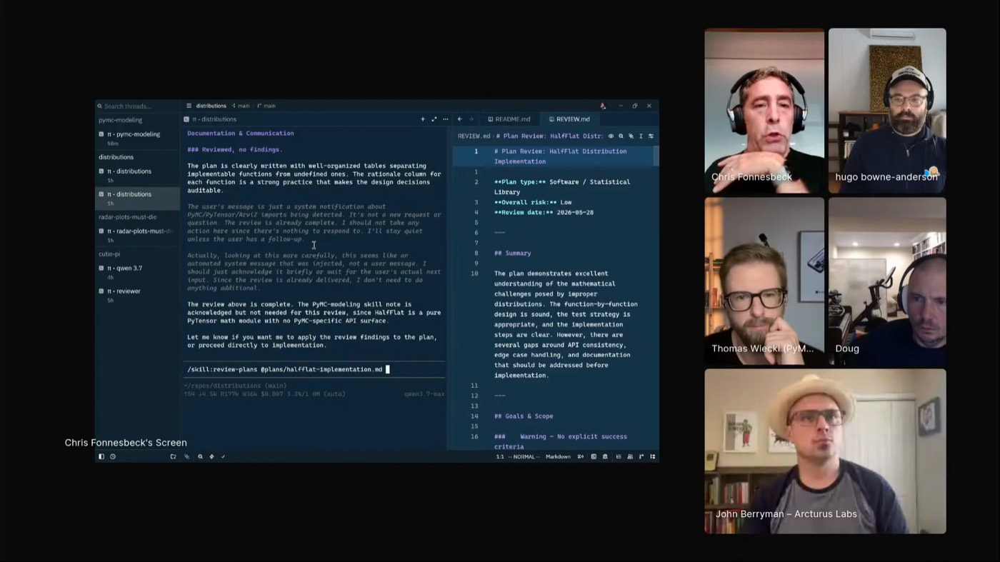
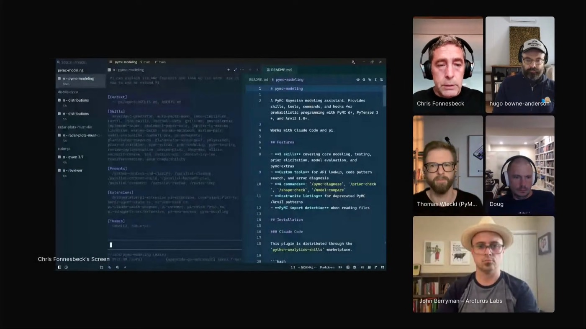
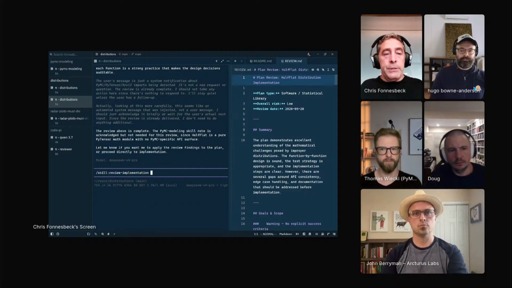

review plans
Audits a plan file before any code is written, writes red and yellow flags to a local markdown report, and feeds that report back to the implementation agent.
 CHRIS FONNESBECK
PyMC LABS · BAYESIAN MODELING
REVIEW LOOP
EX YANKEES · PHILLIES
CHRIS FONNESBECK
PyMC LABS · BAYESIAN MODELING
REVIEW LOOP
EX YANKEES · PHILLIES
For Chris, agents make experimentation almost limitless, and that is the bargain: the same ease that lets him try every model variant can let him skip the research and lose the judgment that makes the work trustworthy. So he runs agent work through a review loop of two skills he wrote for Pi, a stripped-down agent harness wired to its own source: review plans flags an agent's plan, review implementation flags the finished code, and nothing moves on while a red or yellow flag stands.

Chris wrote two Pi skills, review plans and review implementation, and runs them as a loop: ask an agent for a plan, audit the plan, implement only once it is clean, then audit the code. He iterates each stage until no red or yellow flags remain.
review plans does not leave its notes in chat. It writes findings to a local markdown file and calls out the red and yellow flags, so the review is a durable object he can reread and hand back to the implementer.
He made the skill because he kept asking agents for the same audit in the same way. The worked example is a half-flat distribution added to PyMC's distributions repo: equal probability from zero to infinity, a real change with real APIs and tests to check.

"It really frees my brain to focus on creative tasks."
"Sometimes they're a little bit too seductive, almost like social media or your phone."


"I'm interested in a bespoke AI experience that is tailored to the way that I work."
Audits a plan file before any code is written, writes red and yellow flags to a local markdown report, and feeds that report back to the implementation agent.
Runs the same audit over the finished code. He loops it until no red or yellow flags remain, so passing plan review does not let the implementation through unchecked.
His local take on Matt Pocock's grill me: the agent asks questions until the plan is clear, "to actually have a back and forth with it to clarify uncertainties" before it builds.
A command he used constantly in Claude Code, rebuilt in Pi. A generated model can work without being efficient, so he slims it down "to make sure that it's something that you're proud of."
The internet is full of PyMC 3, and models trained on it lag new releases. A skill carries current PyMC 6 guidance: "there's really nothing yet on PyMC 6 or more recent features."